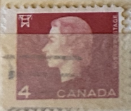
| SOURCE | TITLE| IMAGE MATCH | click to source page |
| eBay | Canada 4 cent stamp with Young Queen Elizabeth on Red Background Used | eBay | 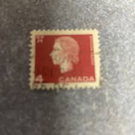 |
| Mercari | 4 cent Canadian stamp | Mercari | 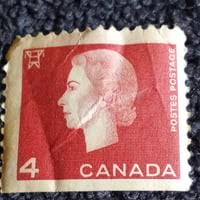 |
| Stampedia | stampedia CANADA STAMP catalog | 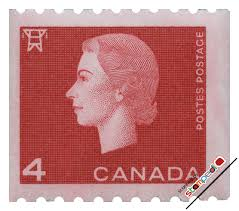 |
| Alamy | A drawing of Queen Elizabeth II with a letter near Buckingham Palace are seen to offer a tribute to Queen Elizabeth II in London on Sept.17, 2022. Queen Elizabeth II, the longest-serving | 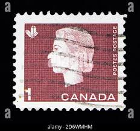 |
| vocal.media | Uncle Ben's Sun-Ray Club | Writers | 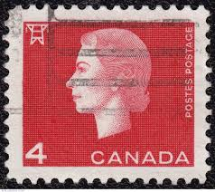 |
| Arpin Philately | Buy Canada #401ais - Queen Elizabeth II (1963) 1¢ - Single with straight edge, from 401ai | Arpin Philately | 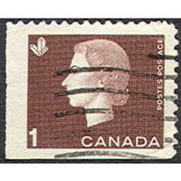 |
| Find Your Stamps Value | Value of queen elizabeth canada 4 cent stamps | 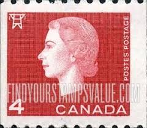 |
| Phil Bansner | Stamps: Coils (Page 4) | 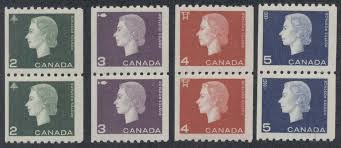 |
| Dreamstime.com | Cents Canadian Coin Stock Photos - Free & Royalty-Free Stock Photos from Dreamstime | 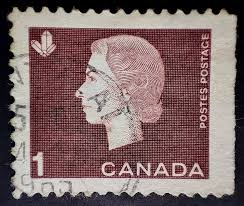 |
| eBay | Red Royalty Elizabeth II (1952-2022) Era Canadian Stamps for sale | eBay | 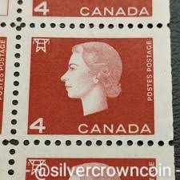 |
| HipStamp | Canada #404 4c Queen Elizabeth II & Electric High Tension Tower | Canada, General Issue Stamp / HipStamp | 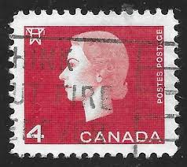 |
| HipStamp | Canada 404: 4c Queen Elizabeth II, used, F-VF | Canada, General Issue Stamp / HipStamp | 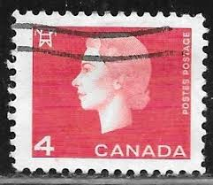 |
| eBay | Blue George VI (1936-1952) Canadian Stamps for sale | eBay | 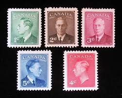 |
| Dreamstime.com | 127 Canada Stamp Set Stock Photos - Free & Royalty-Free Stock Photos from Dreamstime | 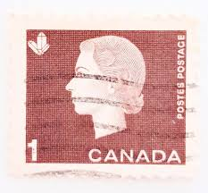 |
| X | 1965 Canada 1c and 4c Queen Elizabeth II definitive #stamps in action #stamp #stampcollecting #philately #Canada | 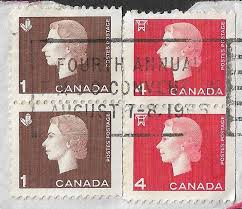 |
| Alamy | Canadian stamp elizabeth hi-res stock photography and images - Alamy | 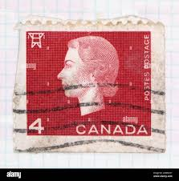 |
| Dreamstime.com | CANADA - CIRCA 1972: a Stamp Printed in Canada Shows a Portrait of Canadian Prime Minister Richard Bedford Bennett, Circa 1972. Editorial Photo - Image of collection, deliver: 185866471 | 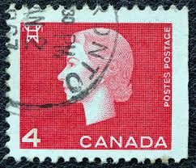 |
| Moreland Revenue Stamps | Stamp Errors - EFO's - Moreland Revenue Stamps - Miscut Errors | 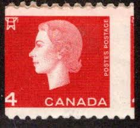 |
| Stampedia | スタンペディア カナダ 切手 カタログ | 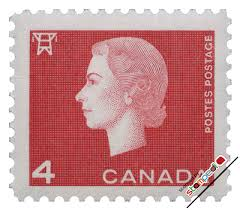 |
| Wikipedia | Crystallography on stamps - Wikipedia |  |
| Dreamstime.com | 02.09.2020 Divnoe Stavropol Territory Russia Postage Stamp Canada 1962 Queen Elizabeth II Portrait on the Red Background Editorial Photo - Image of mark, britain: 175171751 | 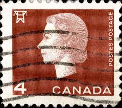 |
| HipStamp | Canada #401 Queen Elizabeth II and Crystal; Used | Canada, General Issue Stamp / HipStamp | 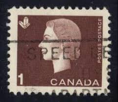 |
| Alamy | 7 FEBRUARY 1962 QUEEN ELIZABETH II ARRIVES AT HER MAJESTY'S THEATRE FOR A PERFORMANCE OF 'HMS PINAFORE', LONDON, ENGLAND Stock Photo - Alamy | 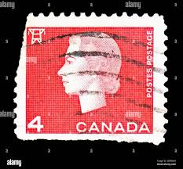 |
| HipStamp | Browse Listings / HipStamp | 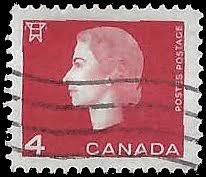 |
| Mystic Stamp Company | 401-05 - 1962-63 Canada - Mystic Stamp Company | 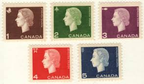 |
| eBay | 6 Different Stamps Used Free Shipping | eBay | 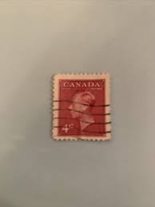 |
| eBay | Canada Stamp Queen Elizabeth 4c Used Red Side Profile TKS1399* | eBay | 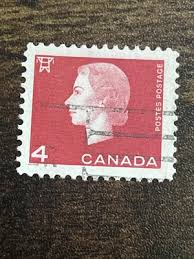 |
| Arpin Philately | Buy Canada #404xx - Queen Elizabeth II (1963) 4¢ - Precancelled (no.404) | Arpin Philately | 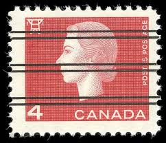 |
| eBay | Canada 4 cent stamp 1963 #404 Queen Elizabeth II Cameo Issue Tower Used TKS357* | eBay | 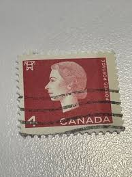 |
| eBay | Canada - 1962 - Queen Elizabeth II - 4 C - Used - #1 | eBay | 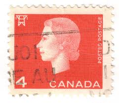 |
| Stamp Bears | Canada Queen Elizabeth II Cameo Issues | Stamp Bears | 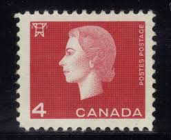 |
| Dreamstime.com | 644 Old Queen Sketch Stock Photos - Free & Royalty-Free Stock Photos from Dreamstime | 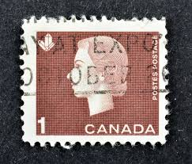 |
| eBay | Elizabeth II (1952-2022) Era Canadian Stamp Blocks & Multiples for sale | eBay | 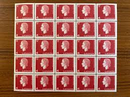 |
| TrueGether | Shop Canada from Entertainment Memorabilia Online at Best Prices | TrueGether | 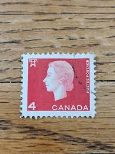 |
| Shutterstock | 92+ Thousand 1947 Canadian 4 Cent Stamp Royalty-Free Images, Stock Photos & Pictures | Shutterstock | 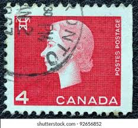 |
| eBay | vintage Canada postage stamp book booklet w/ unused stamps one & four cent | eBay | 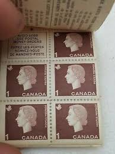 |
| Alamy | Queen Elizabeth II, postage stamp, Canada, 1962 Stock Photo - Alamy |  |
| Alamy | Canadian stamp hi-res stock photography and images - Alamy | 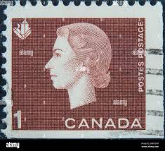 |
| eBay | Canada 4 cent stamp 1963 block MNH #404 Queen Elizabeth II Cameo Issue Tower | eBay | 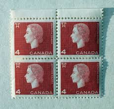 |
| Stamp Community Forum | Rare? Canadian 1 Cent Stamp, What Is It Whered It Come From - Stamp Community Forum |  |
| Shutterstock | 9 Velikabritaniya Royalty-Free Images, Stock Photos & Pictures | Shutterstock | 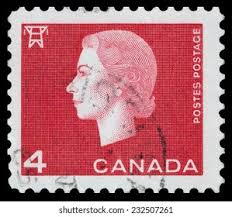 |
| eBay | Canada #404 Very Fine Never Hinged Preprint Paperfold Variety | eBay | 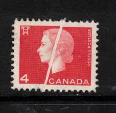 |
| All Nations Stamp and Coin | Canada #401 VFNH 1963 1c QEII Preprinting Crease | All Nations Stamp and Coin |  |
| iStock | Queen Elizabeth Ii Postage Stamp Stock Photo - Download Image Now - Abstract, Black Background, Black Color - iStock | 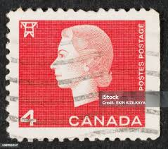 |
| Todocolección | canada, 2 cent, rey eduardo vii, año 1903.. - Buy Antique stamps of Canada on todocoleccion | 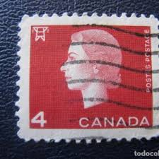 |
| Etsy | Stamp Art, Brown, Queen Elizabeth II, 1 Cent, Canada, Used Stamps - Etsy | 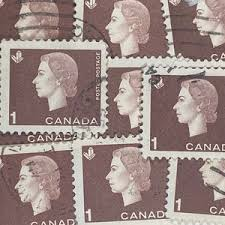 |
| Dreamstime.com | Vintage Queen Elizabeth II Postage Stamp Editorial Stock Photo - Image of collection, commemorate: 85355958 |  |
| eBay | Massena, NY Aerial View Eisenhower Lock on St Lawrence Seaway Vintage Postcard | eBay | 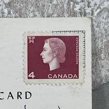 |
| Dreamstime.com | 221 British Postal Mark Stock Photos - Free & Royalty-Free Stock Photos from Dreamstime |  |
| eBay | CANADA 1962 CANADIAN QUEEN ELIZABETH FV FACE 4 CENT RED STAMP 100% SHIFTED ERROR | eBay | 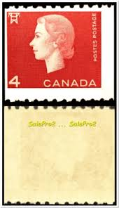 |
| eBay | Canada - 1978 - 14¢ - Queen Elizabeth II - #17836 | eBay | 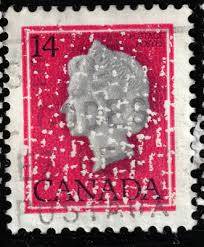 |
| eBay | CANADA SCOTT # 926A, USED, GREAT PRICE! | eBay | 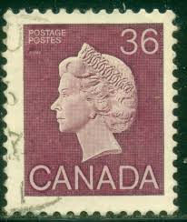 |
| eBay Australia | (CA232) 1962 CANADA 4c Red QEII ow530 | eBay Australia | 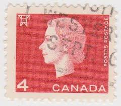 |
| Alamy | Postage stamp canada hi-res stock photography and images - Page 7 - Alamy |  |
| eBay | CANADA SCOTT 98 MH FINE - 1908 2c CARMINE QUEBEC TERCENTENARY ISSUE CV $40 | eBay | 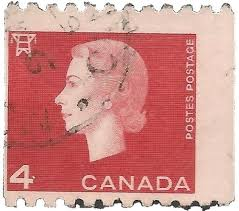 |
| eBay | 🍁Coil strips of 4,MNH #345, #407, #408, Cat $47 Queen Elizabeth II Canada mint | eBay | 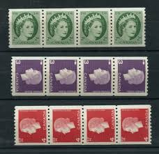 |
| Stampsandcanada | Stampsandcanada - Queen Elizabeth II - 1 cent 1963 - Stamps of Canada - Price guide and value | |
| Find Your Stamps Value | King George VI 3c Rose violet stamp price, value | |
| eBay | Canada 4 Cent Stamp Queen for sale | eBay |